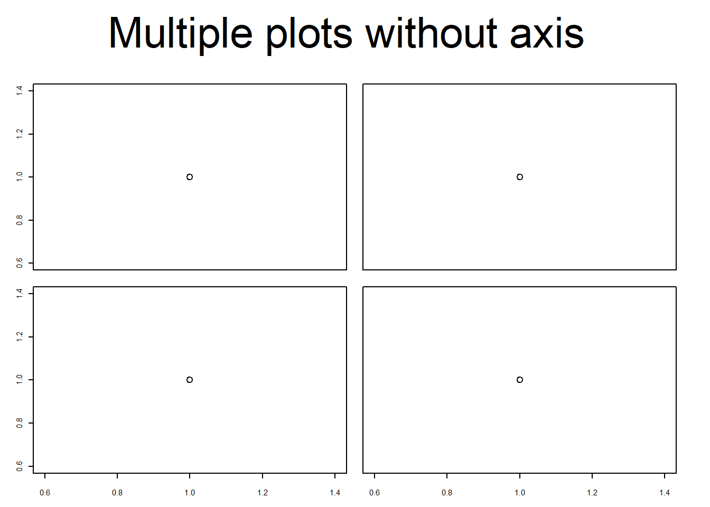
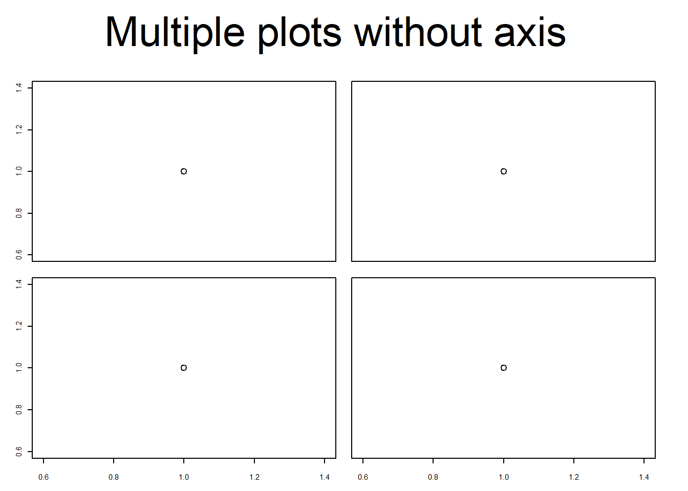

Chapter 11 Plots
11.1 Graphical parameters par()
11.1.1 Set graphical parameters
Change global option
change for local plot
When parameters are set, their previous values are returned in an invisible named list. Such a list can be passed as an argument to par to restore the parameter values.
reset default
check current parameter
#> [1] FALSEThe parameters are defined for the currently active device
- Normally the Rstudio plot panel
- If
png()orpdf()opend ⇒ only within this document dev.off()closes device and resetpar()- If
png()orpdf()⇒ the sameparare active as they were before the devicepng()orpdf()was opend - If Rstudio panel ⇒ the default
parare active
- If
11.1.2 Default
11.1.3 Device region
Plot outside plotting region
FALSE \(\Rightarrow\) clipped to the plot regions
TRUE \(\Rightarrow\) clipped to the figure region
NA \(\Rightarrow\) clipped to the device region
11.1.4 Coordinate sytem
There are in total 9 coordinate sytems
- absolute
- \((0,0)\) in lower left device corner
inchescan be converted to cm with functioncm()deviceusually in pixels (png) or points (pdf)linesbased onmex(relative to font size)charsbased oncex(font size)
- \((0,0)\) depend on what is plotted
useruser coordinates
- \((0,0)\) in lower left device corner
- normalized
ndcnormalized device coordinatesnicnormalized inner region coordinatesnfcnormalized figure coordinatesnpcnormalized plot coordinates
![Interval [0, 1] for different normalized coordinate systems](R_Ref_Book_files/figure-html/unnamed-chunk-48-1.png)
Figure 11.1: Interval [0, 1] for different normalized coordinate systems
Convert between coordinate system
Use grconvertX() to convert between different coordinate systems
11.1.5 Define device regions
Useful links: (Device regions)[http://www.melissaclarkson.com/resources/R_guides/documents/figure_layout_Ver1.pdf], (fig and fin)[http://www.programmingr.com/content/positioning-charts-fig-and-fin/], (oma and mgp[http://www.programmingr.com/content/controlling-margins-and-axes-oma-and-mgp/])
11.1.5.1 Split device
Several options (see here)
- array:
par(mfrow = c(2,2))(mfcolfills the array by columns) - grid:
layout(matrix()) - arbitrary locations:
par(fig = ...)combined withpar(new=TRUE) split.screen()pairs()coplot()
Example for copy paste
par(mfrow = c(2, 2)) # 2-by-2 grid of plots
par(oma = c(4, 4, 0, 0)) # make room (i.e. the 4's) for the overall x and y axis titles
par(mar = c(2, 2, 1, 1)) # make the plots be closer together
# now plot the graphs with the appropriate axes removed (via xaxt and yaxt),
# remove axis labels (so that they are not redundant with overall labels, and set
# some other nice choices for graphics parameters
plot(runif(10), xlab = "", ylab = "", xaxt = "n", las = 1, ylim = c(0, 1))
plot(runif(10), xlab = "", ylab = "", xaxt = "n", yaxt = "n", ylim = c(0, 1))
plot(runif(10), xlab = "", ylab = "", las = 1, ylim = c(0, 1))
plot(runif(10), xlab = "", ylab = "", yaxt = "n", ylim = c(0, 1))
# print the overall labels
mtext("x-axis title", side = 1, outer = TRUE, line = 2)
mtext("y-axis title", side = 2, outer = TRUE, line = 2)Useful helper function
FunNewPar <- function(oma = c(0, 0, 2, 2), mar = c(4, 4, 0, 0), tcl = -0.3, mgp = c(2,
0.5, 0), cex.axis = 0.7, ps = 10, xpd = NA) {
x <- par(oma = oma, mar = mar, tcl = tcl, mgp = mgp, cex.axis = cex.axis, ps = ps,
xpd = xpd)
invisible(x)
}Multiple plots with everything
Multiple plots without axis title
Multiple plots without axis
 

11.1.5.2 Margins
Define margine area using lines coordinate system
Define margine area using inches coordinate system
Define margine area using ndc coordinate system
par("plt") # Start and endpoint of plot region
#> [1] 0.1171429 0.9400000 0.2040000 0.8360000
par("fig") # Start and endpoint of figure region
#> [1] 0 1 0 1Define region dimensions in inches
#> [1] 5.759999 3.159999#> [1] 6.999999 4.999999Define plot region using nfc
#> [1] 0.1171429 0.9400000 0.2040000 0.8360000#> [1] 0 1 0 1